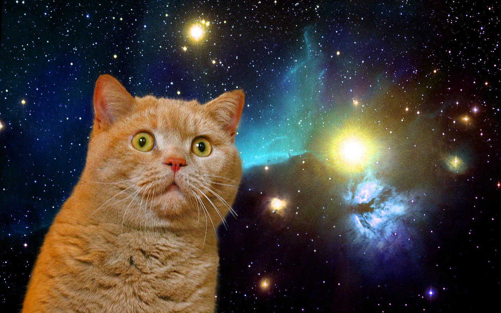

The Curious Case of Extraterrestrial Feline
What we know so far
There is much up for debate over whether extraterrestrial felines, or better known as space cats really exist in this universe

Here are some major studies done by some of the worlds finest scholars
- In the 1600's cat man Bert discovered hair tacked onto his space ship after one of his frequent space visits
- The talking Moon claims he's seen many space cats throughout the Universes timeline
- In the early 2000's a group of harvard scholars exhanced bitcoin with what they believe to be a cat colony located on saturn

Although the supporting evidence is overwhelming their are some counter studies
- Jeremy the Golden Retreiever says these creatures are not cats but actually space dogs
- Theirs still much debate over the moons credibility
Use these study tools to help us bridge the link between space and cats